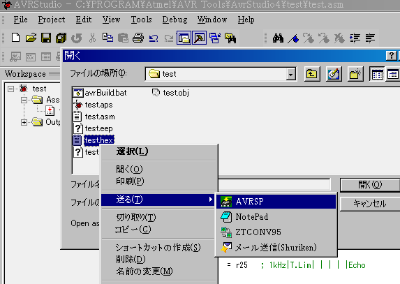

avrsp.exeとavrsp.iniをAVR Studioのフォルダにコピーし、それに対するショートカットをSendToに作っておきます。.iniには-wやポート指定オプションを追加しておくといいでしょう。そして、コンパイルしたらCtrl-Oでダイアログを開いて、HEXファイルをAVRSPに放り込めばOKです。なお、この場合ファイルを1個しか選択できないので、eepは後から書き込む必要があります。別途そのプロジェクトフォルダを開いておけば、複数まとめて投入もできます。また、SendToよりもそのプロジェクトフォルダに置いてD&Dした方がむしろ早いと思います。

あ、石投げないでね(^_^;。